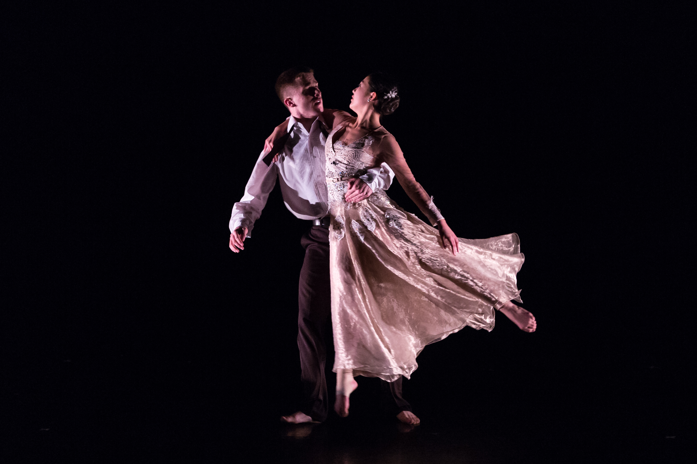

Why Dance?
Since Alexis and Esther both danced, the easiest thing for my mom was to also put me in dance classes. I was put into dance class at 3 years old and fell in love with it from the start. Dance is not only a physical sport for me but an emotional and creative outlet. I love to dance because I can tell a story without words and can express indescribable feelings through movement and music.
Dance Career
My mom is one of the most dedicated, self-sacrificing, loving mom out there. When my sister and I told her we wanted to be the "best dancers in the world," she took that literally. We trained 4-5 times a week for 5 hours at multiple studios in Chicago. We danced at Gus Giordano , Visceral , Hubbard Street , and Forum Dance Theater. All of these dance studios are more than an hour drive from my house, so there was a lot of napping, fighting, and eating that happened in our car. I finished my dance career as part of a 1st company member at Forum Dance Theater. I was lucky enough to tour Europe for 3 weeks performing with my best friends during my last year with the company. This is a link to the program I toured Europe with!
I still continue my love for dance at Andover by being part of the Andover Dance Group and being part of the jazz club here on campus called Blue Strut!
